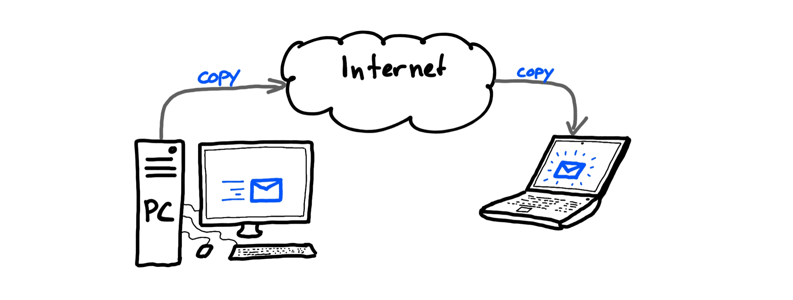

Automatisering
In de transitie van papier naar digitaal wordt uitgebreid gesproken over automatisering en dat dat een opmaat is naar digitalisering. Maar er is meer te begrijpen aan automatisering.
Mindset
Automatisering is ook een mindset, een gebruik. Op het moment dat ik twee keer dezelfde handeling doe, ga ik automatiseren. Het is een standaard onderdeel van het basisonderwijs in Nederland, waarin kinderen leren om hun brein te trainen in het 'standaard uitvoeren van taken'. Dat is automatiseren. Dat passen we dus breed toe.
Software is eating the world - Marc Andreessen
Vandaag de dag is technologie een gewoon onderdeel van ons dagelijks leven en de samenleving. Technologie is en/of bevat software. Veel van onze processen kunnen we automatiseren. Vooral de herhalende en repeterende werkzaamheden. Anno 2024 met de massale toegankelijkheid van AI systemen die overal oppoppen, wordt dat alleen maar duidelijker.
Naar de toekomst toe moeten we daarom meenemen dat veel van wat we nu nog handmatig doen, waar we nu nog toegevoegde waarde van mensen zien, geautomatiseerd zou kunnen gaan worden. Het is een mindset om gericht te zijn op automatisering ... tot het punt dat we onszelf gaan weg automatiseren. Gaan we daar ooit komen? Geen idee. Hebben we taken die in het verleden als 'dat zullen mensen altijd blijven doen' ondertussen al standaard geautomatiseerd? JA! Kleren wassen we met een wasmachine. Afwas doen we met de vaatwasser. Teksten op borden in het buitenland vertalen we met Google Lens. Communiceren met mensen in een voor ons onbekende taal, doen we mbv onze devices.
Onderdeel van het denken in protocollen is dat we gericht zijn op de mogelijkheden van automatisering. Software, code, scripting zouden niet als 'eng' moeten worden beschouwd, maar als normaal onderdeel van ieders werk (en privéleven). Er zijn al tools beschikbaar, die dit ook toegankelijk maken voor iedereen. AI gaat daar nog eens een versnelling in teweeg brengen.
Uitgangspunt is dus automatisering als essentieel onderdeel van de toekomst. Dan is machine-leesbare informatie, data, gegevens ... en regels van groot belang! Dat ondersteunt nog meer de transitie van papier naar digitaal.
Data, software en algoritme
Vandaag de dag lijkt data het belangrijkste te zijn in het digitale domein. Gezien vanuit de geschiedenis van papier naar digitaal is dat ook wel herkenbaar. En toch ... Data alleen is nog steeds 'gewoon data'. Er is software nodig om die data te kunnen doorzoeken, bekijken, bewerken. De software is daarmee even belangrijk als de data zelf. Dat past ook bij bovengenoemde quote van Marc Andreessen.
Algoritmes en Artificial Intelligence (AI) staat ook groot in de belangstelling. Het is van belang om te beseffen hoe deze samenhangt met software en data. Het volgende plaatje geeft deze samenhang weer:

In broncode (sources) staan de computer instructies van de software. Als deze door de computer uitgevoerd worden, hebben we het over software. Een product. Een systeem. Deze software maakt gebruik van data en produceert data. Artificial Intelligence algoritmes zijn (onder andere) getrainde modellen, eigenlijk statistieken, op basis van data. Zo'n AI model kan dan vervolgens weer in software gebruikt worden bij de interpretatie data en de productie van nieuwe data.
Internet
Een ander aspect dat van belang is bij automatisering en computertechniek, is de eigenlijke werking van de computer en het internet. We hebben het - als voorbeeld - over het algemeen namelijk (nog steeds) over het versturen van een email. Dat is echter gebruik van woorden en beeldspraak vanuit het papieren tijdperk. In computertechniek bestaat dat helemaal niet!
Als wij een email versturen, dan wordt er een kopie van de data die de email voorstelt, ergens anders opgeslagen ... om vervolgens verder gekopieerd te worden. We zeggen versturen maar feitelijk doen we kopiëren. Een email in mijn mailbox is altijd een kopie van het 'origineel' dat op de computer van de verzender staat.

Sterker nog, zelfs binnen één computer wordt met kopieën gewerkt! Als een computer uit is, staat de data alleen op de hard disk, de harde schijf. Zodra we de computer aan zetten, worden gegevens (data) van de harde schijf gelezen en 'geladen' in het geheugen (memory of RAM). Met laden bedoelen we feitelijk kopiëren. De data staat nog steeds op de harde schijf op exact dezelfde manier als toen de computer uit was. Als we 'iets' met die data doen, dan wordt deze naar het interne geheugen gekopieerd. Als deze vervolgens op het scherm zichtbaar gemaakt dient te worden, wordt de data getransformeerd naar de input voor de Graphical Processing Unit, de GPU. Deze bevat ook geheugen (memory) waarin dan opnieuw een kopie van de getransformeerde, oorspronkelijke data staat. Vervolgens worden verdere transformaties uitgevoerd naar schermresoluties en pixels ... en wordt een volgende kopie in het geheugen van de GPU bewaard. Deze wordt naar het scherm gekopieerd welke een voor ons zichtbaar beeld presenteert. Feitelijk zijn het pixels van een bepaalde kleur die een representatie geven van een document met letters die voor ons betekenis heeft. Dit heeft nog weinig te maken met de oorspronkelijke data van eenen en nullen op de harde schijf van de computer. Origineel en kopie zijn in computertechniek nietszeggende woorden geworden.